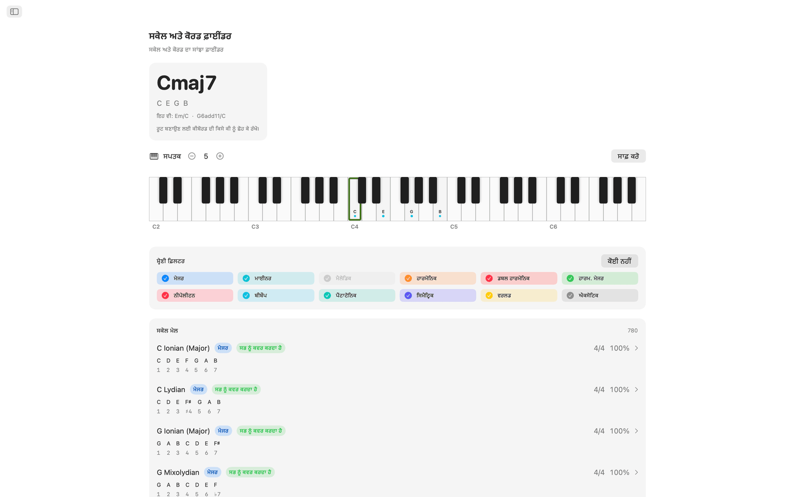
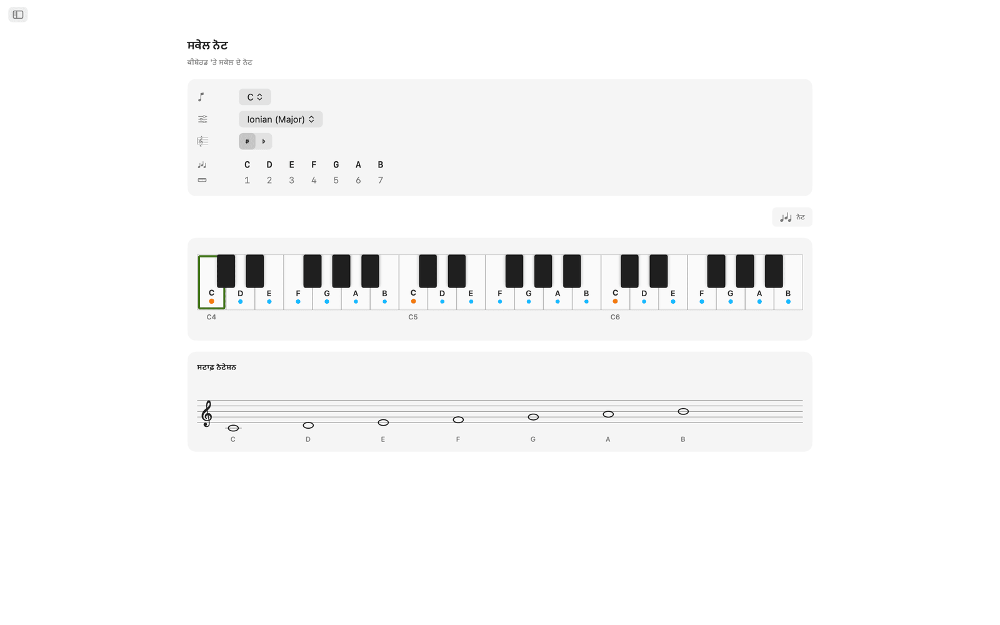
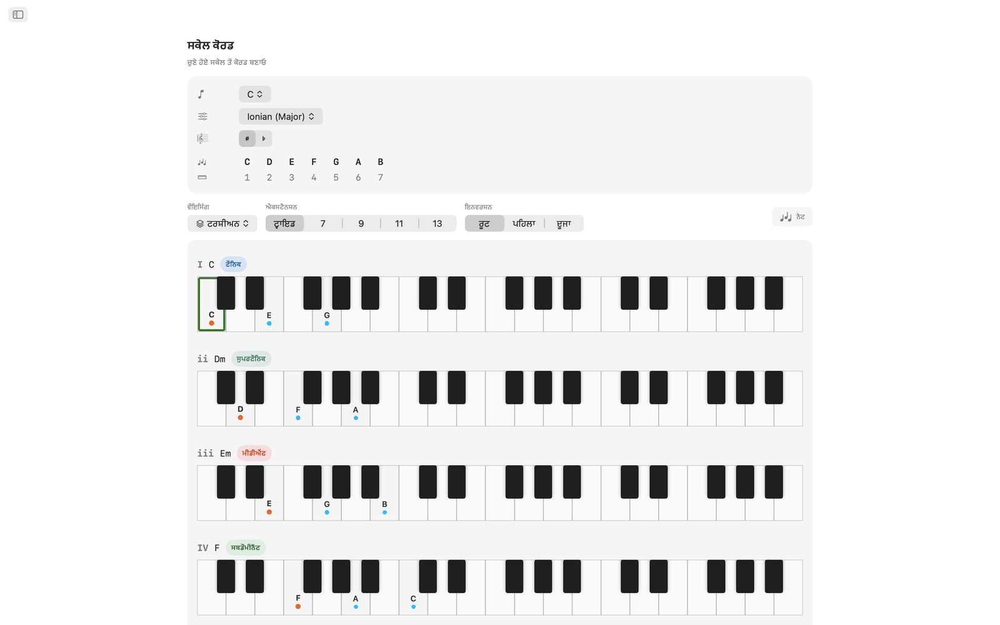
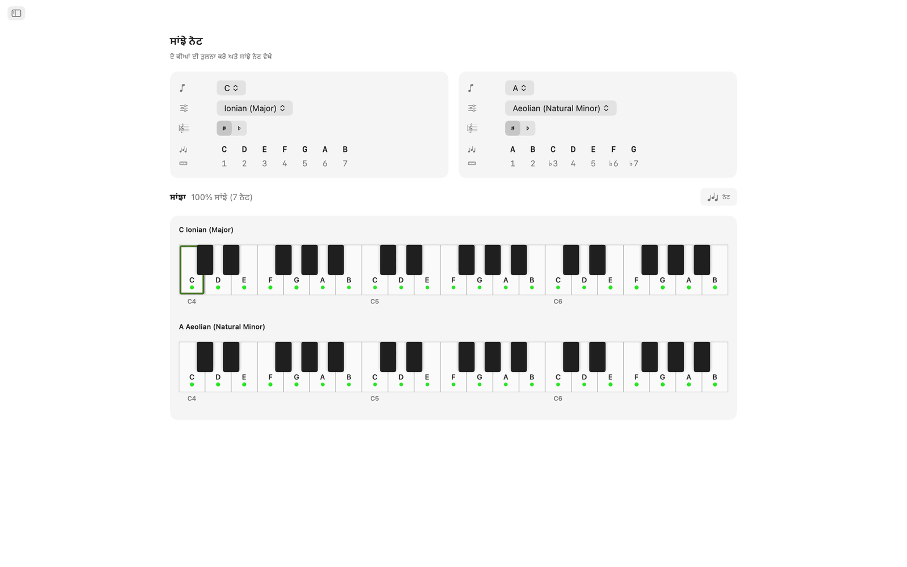
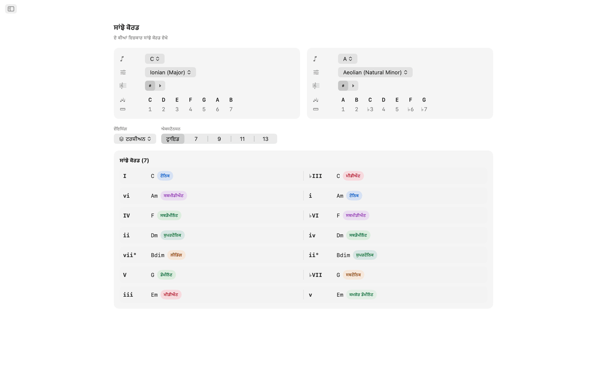
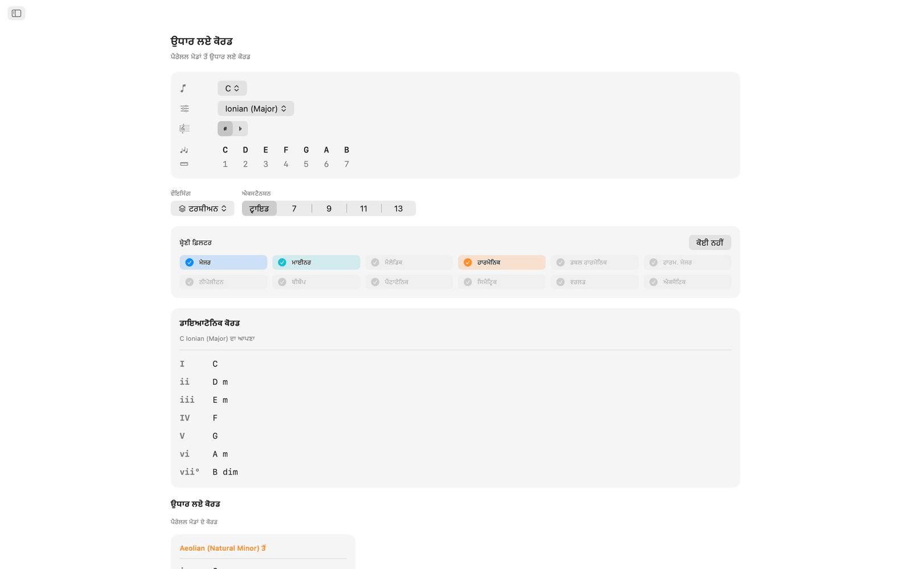
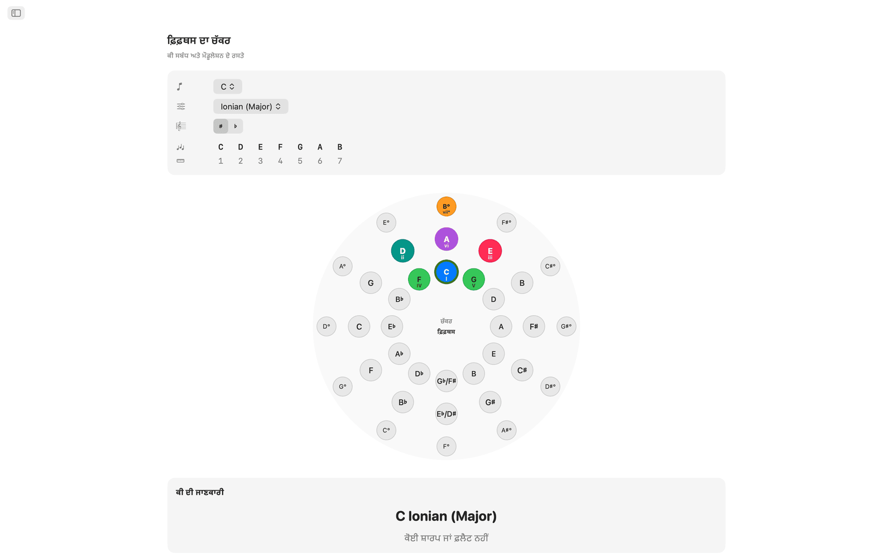
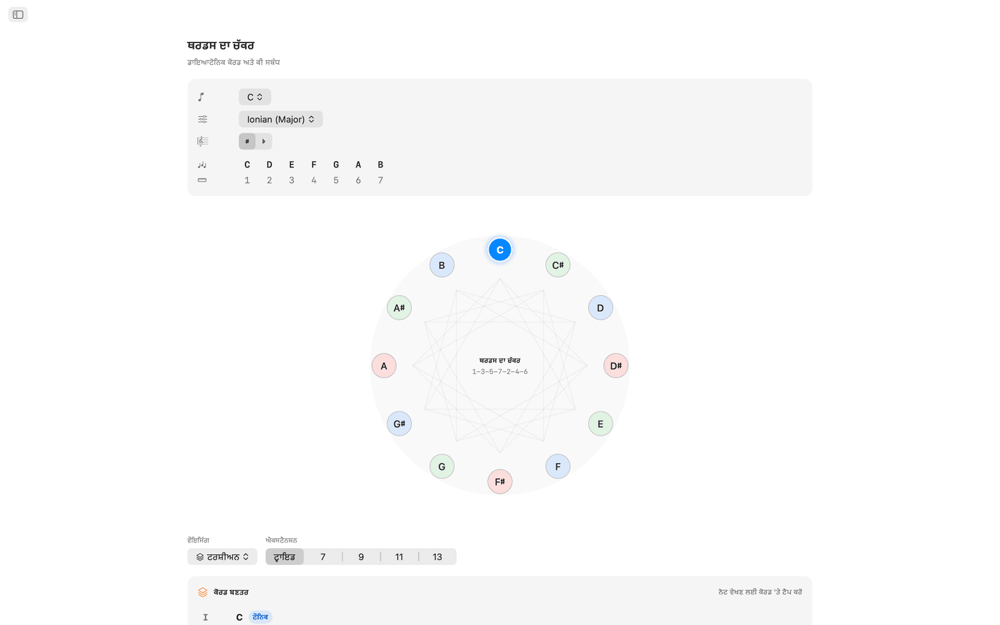
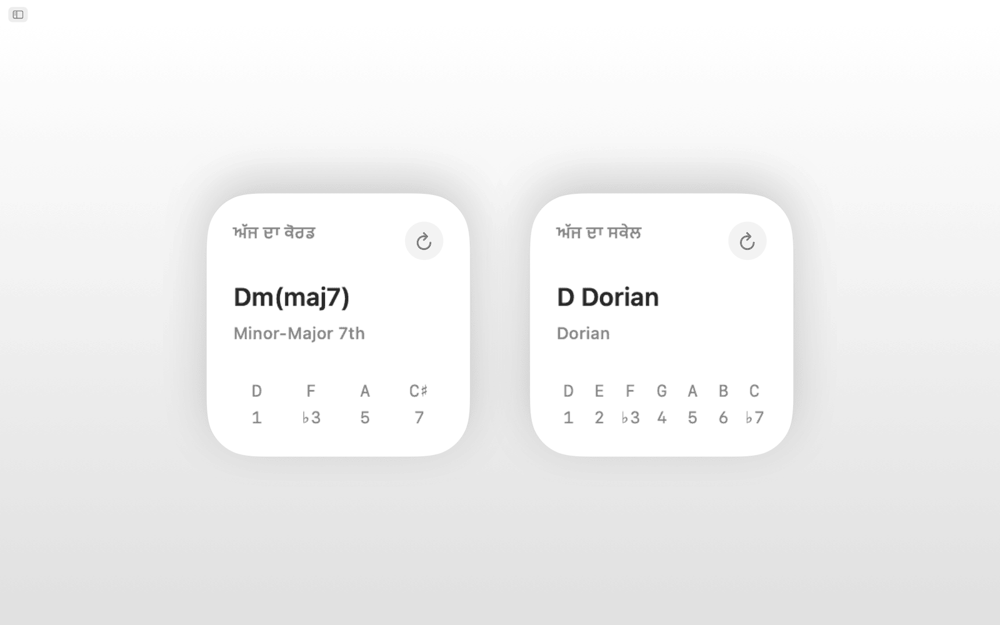
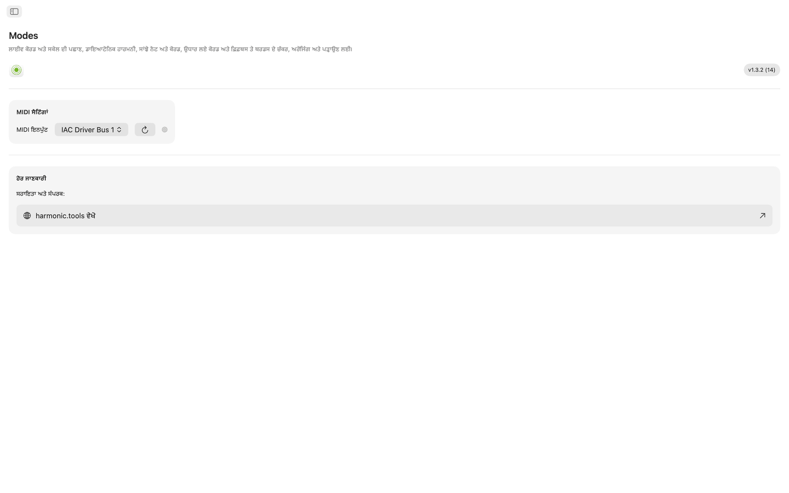

macOS ਲਈ Modes
Modes macOS ਲਈ ਸੰਗੀਤ ਥਿਊਰੀ ਐਪ ਹੈ, ਜਿਸ ਵਿੱਚ ਸਕੇਲ, ਕੋਰਡ, ਵੌਇਸਿੰਗ ਅਤੇ ਮੌਡੂਲੇਸ਼ਨ ਦੇ ਰਸਤੇ ਹਨ। ਇਹ ਸਾਈਡਬਾਰ ਵਾਲੀ ਐਪ ਹੈ ਜੋ ਤੁਹਾਡੇ DAW ਦੇ ਨਾਲ ਖੁੱਲ੍ਹੀ ਰਹਿ ਸਕਦੀ ਹੈ। Siri, Shortcuts, Spotlight ਖੋਜ ਅਤੇ Notification Center ਵਿਜੇਟ ਸਮਰਥਿਤ ਹਨ।
- MIDI ਅਤੇ ਸਕਰੀਨ ਕੀਬੋਰਡ ਵਾਲਾ ਸਕੇਲ ਅਤੇ ਕੋਰਡ ਫ਼ਾਈਂਡਰ
- 65 ਸਕੇਲ · 21 ਕੋਰਡ ਕਿਸਮਾਂ · 8 ਵੌਇਸਿੰਗ ਪਰਿਵਾਰ
- ਸਾਂਝੇ ਨੋਟ, ਸਾਂਝੇ ਕੋਰਡ, ਉਧਾਰ ਲਏ ਕੋਰਡ
- ਇੰਟਰਐਕਟਿਵ ਫ਼ਿਫ਼ਥਸ ਦਾ ਚੱਕਰ + ਥਰਡਸ ਦਾ ਚੱਕਰ
- Siri, Shortcuts, Spotlight ਅਤੇ Notification Center ਵਿਜੇਟ
ਸਕਰੀਨਸ਼ਾਟ
ਲਾਈਟ ਅਤੇ ਡਾਰਕ ਸਕਰੀਨਸ਼ਾਟ ਸ਼ਾਮਲ ਹਨ, ਜੋ ਵੈੱਬਸਾਈਟ ਦੇ ਥੀਮ ਦੇ ਨਾਲ ਬਦਲਦੇ ਹਨ।












ਵਿਸ਼ੇਸ਼ਤਾਵਾਂ
- ਇੰਟਰਐਕਟਿਵ ਮਲਟੀ-ਸਪਤਕ ਕੀਬੋਰਡ 'ਤੇ ਨੋਟ ਵਜਾਓ ਜਾਂ MIDI ਕੰਟਰੋਲਰ ਜੋੜੋ। ਤੁਸੀਂ ਜੋ ਕੋਰਡ ਵਜਾ ਰਹੇ ਹੋ, Modes ਉਸ ਨੂੰ ਉਸੇ ਵੇਲੇ ਪਛਾਣਦਾ ਹੈ: ਮੇਜਰ, ਮਾਈਨਰ, ਡਿਮਿਨਿਸ਼ਡ, ਔਗਮੈਂਟਡ, ਐਕਸਟੈਂਡਡ, ਸਸਪੈਂਡਡ ਅਤੇ ਹੋਰ। ਇਹ ਮੇਲ ਖਾਂਦੇ ਹਰ ਸਕੇਲ ਨੂੰ ਨੋਟ ਕਵਰੇਜ ਅਨੁਸਾਰ ਦਰਜਾ ਦਿੰਦਾ ਹੈ, ਅਤੇ ਤੁਸੀਂ ਨਤੀਜਿਆਂ ਨੂੰ ਸਕੇਲ ਦੀ ਸ਼੍ਰੇਣੀ ਅਨੁਸਾਰ ਫ਼ਿਲਟਰ ਕਰ ਸਕਦੇ ਹੋ (ਡਾਇਆਟੋਨਿਕ, ਮੈਲੋਡਿਕ ਮਾਈਨਰ, ਹਾਰਮੋਨਿਕ ਮਾਈਨਰ, ਪੈਂਟਾਟੋਨਿਕ, ਬੀਬੌਪ, ਸਿਮੈਟ੍ਰਿਕ, ਵਿਸ਼ਵ ਸਕੇਲ ਅਤੇ ਹੋਰ)।
- 65 ਸਕੇਲ ਅਤੇ ਮੋਡਾਂ ਵਿੱਚ ਸੱਤ ਡਾਇਆਟੋਨਿਕ ਮੋਡ, ਮੈਲੋਡਿਕ ਮਾਈਨਰ, ਹਾਰਮੋਨਿਕ ਮਾਈਨਰ, ਡਬਲ ਹਾਰਮੋਨਿਕ, ਨੀਪੋਲੀਟਨ, ਬੀਬੌਪ, ਪੈਂਟਾਟੋਨਿਕ, ਬਲੂਜ਼, ਹੋਲ ਟੋਨ, ਡਿਮਿਨਿਸ਼ਡ, ਔਗਮੈਂਟਡ ਅਤੇ Hirajōshi, Kumoi, In Sen, ਪਰਸ਼ੀਅਨ ਤੇ ਐਨਿਗਮੈਟਿਕ ਵਰਗੇ ਵਿਸ਼ਵ ਸਕੇਲ ਸ਼ਾਮਲ ਹਨ। ਹਰ ਸਕੇਲ ਇੰਟਰਵਲ ਟੋਕਨਾਂ ਨਾਲ ਲਿਖਿਆ ਗਿਆ ਹੈ ਅਤੇ ਕੀਬੋਰਡ 'ਤੇ ਹਾਈਲਾਈਟ ਹੁੰਦਾ ਹੈ।
- ਕੋਈ ਵੀ ਰੂਟ ਅਤੇ ਸਕੇਲ ਚੁਣੋ ਅਤੇ ਦੋ ਸਪਤਕਾਂ ਵਿੱਚ ਕੀ ਦੇ ਸਾਰੇ ਨੋਟ ਹਾਈਲਾਈਟ ਹੋਏ ਵੇਖੋ, ਤਾਂ ਜੋ ਪਤਾ ਲੱਗੇ ਕਿ ਕਿਹੜੇ ਨੋਟ ਸਕੇਲ ਦੇ ਹਨ ਅਤੇ ਰੂਟ ਕਿੱਥੇ ਹੈ।
- Modes ਚੁਣੇ ਹੋਏ ਸਕੇਲ ਦੀ ਹਰ ਡਿਗਰੀ ਲਈ ਡਾਇਆਟੋਨਿਕ ਟ੍ਰਾਇਡ ਜਾਂ ਸੱਤਵੇਂ ਕੋਰਡ ਬਣਾਉਂਦਾ ਹੈ, ਰੋਮਨ ਅੰਕਾਂ, ਕੋਰਡ ਦੇ ਨਾਮਾਂ, ਹਾਰਮੋਨਿਕ ਫ਼ੰਕਸ਼ਨ ਬੈਜ (ਟੌਨਿਕ, ਸਬਡੌਮੀਨੈਂਟ, ਡੌਮੀਨੈਂਟ ਅਤੇ 30 ਤੋਂ ਵੱਧ ਵਿਸਥਾਰਤ ਲੇਬਲ) ਅਤੇ ਵੌਇਸ ਕੀਤੇ ਕੀਬੋਰਡ ਚਿੱਤਰਾਂ ਨਾਲ, ਸਭ ਤੁਲਨਾ ਲਈ ਇੱਕ ਕਤਾਰ ਵਿੱਚ।
- ਕੋਰਡ ਟਰਸ਼ੀਅਨ, sus2, sus4, ਸਿਕਸਥ, ਐਡ, ਕਵਾਰਟਲ, ਕੁਇੰਟਲ ਅਤੇ ਪਾਵਰ ਵੌਇਸਿੰਗ ਵਿੱਚ ਬਣਾਏ ਜਾ ਸਕਦੇ ਹਨ, ਟ੍ਰਾਇਡ ਤੋਂ ਲੈ ਕੇ ਤੇਰ੍ਹਵੇਂ ਕੋਰਡ ਤੱਕ, ਅਤੇ ਹਰ ਐਕਸਟੈਂਸ਼ਨ ਆਪਣੇ ਆਪ ਲੇਬਲ ਹੁੰਦੀ ਹੈ।
- ਸਾਂਝੇ ਨੋਟ ਅਤੇ ਸਾਂਝੇ ਕੋਰਡ ਕਿਸੇ ਵੀ ਦੋ ਕੀਆਂ ਦੀ ਨਾਲ-ਨਾਲ ਤੁਲਨਾ ਕਰਦੇ ਹਨ: ਕਿਹੜੇ ਨੋਟ ਸਾਂਝੇ ਹਨ, ਕਿਹੜੇ ਸਿਰਫ਼ ਇੱਕ ਕੀ ਵਿੱਚ ਹਨ ਅਤੇ ਕਿਹੜੇ ਕੋਰਡ ਦੋਵਾਂ ਕੀਆਂ ਵਿੱਚ ਸਾਂਝੇ ਹਨ। ਇਸ ਨਾਲ ਮੌਡੂਲੇਸ਼ਨ ਦੀ ਯੋਜਨਾ ਬਣਾਉਣ ਜਾਂ ਕੋਰਡ ਪ੍ਰੋਗਰੈਸ਼ਨ ਨੂੰ ਨਵੇਂ ਸਿਰੇ ਤੋਂ ਹਾਰਮਨਾਈਜ਼ ਕਰਨ ਵਿੱਚ ਮਦਦ ਮਿਲਦੀ ਹੈ।
- ਉਧਾਰ ਲਏ ਕੋਰਡ ਵਾਲਾ ਦ੍ਰਿਸ਼ ਤੁਹਾਡੀ ਕੀ ਦੇ ਆਪਣੇ ਡਾਇਆਟੋਨਿਕ ਕੋਰਡ ਅਤੇ ਪੈਰੇਲਲ ਮੋਡਾਂ ਤੋਂ ਉਧਾਰ ਲਏ ਹਰ ਵਿਕਲਪ ਨੂੰ ਇਕੱਠੇ ਸੂਚੀਬੱਧ ਕਰਦਾ ਹੈ, ਸਰੋਤ ਮੋਡ ਅਨੁਸਾਰ ਵੰਡੇ ਹੋਏ।
- ਫ਼ਿਫ਼ਥਸ ਦਾ ਚੱਕਰ ਇੰਟਰਐਕਟਿਵ ਦੋ-ਰਿੰਗ ਚੱਕਰ ਹੈ (ਬਾਹਰ ਮੇਜਰ, ਅੰਦਰ ਨੈਚੁਰਲ ਮਾਈਨਰ)। ਕੀ ਬਦਲਣ ਲਈ ਕਿਸੇ ਹਿੱਸੇ 'ਤੇ ਕਲਿੱਕ ਕਰੋ। ਡੌਮੀਨੈਂਟ, ਸਬਡੌਮੀਨੈਂਟ, ਰਿਲੇਟਿਵ, ਪੈਰੇਲਲ ਅਤੇ ਨੇੜਲੀਆਂ ਕੀਆਂ ਦਿਖਾਈਆਂ ਜਾਂਦੀਆਂ ਹਨ, ਮੌਡੂਲੇਸ਼ਨ ਦੀ ਮੁਸ਼ਕਲ ਦੇ ਬੈਜ ਅਤੇ ਕੀ ਸਿਗਨੇਚਰ ਦੇ ਵੇਰਵਿਆਂ ਸਮੇਤ।
- ਥਰਡਸ ਦਾ ਚੱਕਰ ਡਿਮਿਨਿਸ਼ਡ ਚੱਕਰ ਦੇ ਚਿੱਤਰ 'ਤੇ ਕ੍ਰੋਮੈਟਿਕ ਮੀਡੀਐਂਟ ਸਬੰਧ ਦਿਖਾਉਂਦਾ ਹੈ। ਹਰ ਪਿੱਚ ਕਲਾਸ ਦੇ ਮੇਜਰ ਅਤੇ ਮਾਈਨਰ ਬਟਨ ਮੀਡੀਐਂਟ, ਰਿਲੇਟਿਵ ਅਤੇ ਪੈਰੇਲਲ ਸਬੰਧ ਦਿਖਾਉਂਦੇ ਹਨ, ਜੋ ਸਿਨੇਮੈਟਿਕ ਅਤੇ ਨਿਓ-ਰੀਮਾਨੀਅਨ ਮੌਡੂਲੇਸ਼ਨ ਦੀ ਯੋਜਨਾ ਲਈ ਕੰਮ ਆਉਂਦੇ ਹਨ।
- ਕੋਈ ਵੀ ਕਲਾਸ-ਕੰਪਲਾਇੰਟ MIDI ਕੀਬੋਰਡ ਜਾਂ ਕੰਟਰੋਲਰ ਜੋੜੋ। ਵਜਾਏ ਨੋਟ ਪਛਾਣ ਲਈ ਸਕਰੀਨ 'ਤੇ ਕੀਤੇ ਕਲਿੱਕਾਂ ਨਾਲ ਮਿਲ ਜਾਂਦੇ ਹਨ।
- Siri ਨੂੰ ਕਹੋ ਜਾਂ Shortcuts ਵਿੱਚ ਐਕਸ਼ਨ ਚਲਾਓ: ਕਿਸੇ ਸਕੇਲ ਦੇ ਨੋਟ ਦਿਖਾਓ, ਕਿਸੇ ਕੀ ਦੇ ਕੋਰਡ ਸੂਚੀਬੱਧ ਕਰੋ, ਸਕੇਲ ਜਾਂ ਕੋਰਡ ਪਛਾਣੋ, ਕੋਰਡ ਦੇ ਨੋਟ ਦੱਸੋ, ਦੋ ਨੋਟਾਂ ਵਿਚਕਾਰ ਇੰਟਰਵਲ ਲੱਭੋ, ਨੋਟ ਟ੍ਰਾਂਸਪੋਜ਼ ਕਰੋ, ਜਾਂ ਫ਼ਿਫ਼ਥਸ ਦਾ ਚੱਕਰ ਅਤੇ ਉਧਾਰ ਲਏ ਕੋਰਡ ਖੋਲ੍ਹੋ। ਸਕੇਲ ਅਤੇ ਕੋਰਡ Spotlight ਵਿੱਚ ਵੀ ਇੰਡੈਕਸ ਕੀਤੇ ਹੁੰਦੇ ਹਨ।
- ਅੱਜ ਦਾ ਸਕੇਲ ਅਤੇ ਅੱਜ ਦਾ ਕੋਰਡ ਵਿਜੇਟ Notification Center ਵਿੱਚ ਜੋੜੇ ਜਾ ਸਕਦੇ ਹਨ।
ਡੈਸਕਟੌਪ 'ਤੇ
- ਪੂਰੀ ਤਰ੍ਹਾਂ ਔਫ਼ਲਾਈਨ ਚੱਲਦਾ ਹੈ। ਕੋਈ ਖਾਤਾ ਨਹੀਂ, ਕੋਈ ਇਸ਼ਤਿਹਾਰ ਨਹੀਂ, ਕੋਈ ਟਰੈਕਿੰਗ ਨਹੀਂ
- ਸਾਈਡਬਾਰ ਨੈਵੀਗੇਸ਼ਨ ਵਾਲੀ ਨੇਟਿਵ macOS ਐਪ
- ਡਾਰਕ ਮੋਡ ਦੇ ਅਨੁਕੂਲ ਇੰਟਰਫ਼ੇਸ, ਜੋ ਤੁਹਾਡੇ ਸਿਸਟਮ ਦੀ ਦਿੱਖ ਦੇ ਨਾਲ ਚੱਲਦਾ ਹੈ
- ਐਨਹਾਰਮੋਨਿਕ ਸਪੈਲਿੰਗ: ਆਟੋਮੈਟਿਕ, ਸ਼ਾਰਪ ਜਾਂ ਫ਼ਲੈਟ
- ਆਕਾਰ ਬਦਲਣ ਯੋਗ ਵਿੰਡੋ। ਇਸ ਨੂੰ ਆਪਣੇ DAW ਦੇ ਨਾਲ ਖੁੱਲ੍ਹਾ ਰੱਖੋ
ਪਹੁੰਚਯੋਗਤਾ
VoiceOver ਅਤੇ Voice Control ਨਾਲ ਕੰਮ ਕਰਦਾ ਹੈ, ਅਤੇ ਤੀਰ ਕੁੰਜੀਆਂ ਤੇ Space ਨਾਲ ਕੀਬੋਰਡ ਤੋਂ ਵੀ ਵਰਤਿਆ ਜਾ ਸਕਦਾ ਹੈ।
Modes 7 ਦਿਨ ਮੁਫ਼ਤ ਅਜ਼ਮਾਇਆ ਜਾ ਸਕਦਾ ਹੈ। ਟ੍ਰਾਇਲ ਤੋਂ ਬਾਅਦ ਪੂਰੀ ਪਹੁੰਚ ਇੱਕ ਵਾਰ ਦੀ ਖ਼ਰੀਦ ਹੈ, ਕੋਈ ਸਬਸਕ੍ਰਿਪਸ਼ਨ ਨਹੀਂ।
ਸੰਗੀਤ ਥਿਊਰੀ ਦੀ ਕਵਰੇਜ
ਐਪ ਵਿਚਲੇ ਸਕੇਲ, ਮੋਡ, ਕੋਰਡ, ਵੌਇਸਿੰਗ, ਇੰਟਰਵਲ ਅਤੇ ਹਾਰਮੋਨਿਕ ਟੂਲਾਂ ਦਾ ਹਵਾਲਾ, ਹਰ ਇੱਕ ਪਿੱਛੇ ਨੋਟ ਫ਼ਾਰਮੂਲਿਆਂ ਸਮੇਤ।
ਸਕੇਲ ਅਤੇ ਮੋਡ, ਕੁੱਲ 65
ਹਰ ਸਕੇਲ ਇੰਟਰਵਲ ਟੋਕਨਾਂ ਨਾਲ ਲਿਖਿਆ ਗਿਆ ਹੈ ਅਤੇ ਕੀਬੋਰਡ 'ਤੇ ਹਾਈਲਾਈਟ ਹੁੰਦਾ ਹੈ, ਆਟੋਮੈਟਿਕ, ਸ਼ਾਰਪ ਜਾਂ ਫ਼ਲੈਟ ਐਨਹਾਰਮੋਨਿਕ ਸਪੈਲਿੰਗ ਨਾਲ।
ਮੇਜਰ ਮੋਡ (ਡਾਇਆਟੋਨਿਕ)
| Ionian (Major) | 1 2 3 4 5 6 7 |
| Dorian | 1 2 ♭3 4 5 6 ♭7 |
| Phrygian | 1 ♭2 ♭3 4 5 ♭6 ♭7 |
| Lydian | 1 2 3 ♯4 5 6 7 |
| Mixolydian | 1 2 3 4 5 6 ♭7 |
| Aeolian (Natural Minor) | 1 2 ♭3 4 5 ♭6 ♭7 |
| Locrian | 1 ♭2 ♭3 4 ♭5 ♭6 ♭7 |
ਮੈਲੋਡਿਕ ਮਾਈਨਰ (ਜੈਜ਼ ਮਾਈਨਰ) ਮੋਡ
| Melodic Minor (Jazz Minor) | 1 2 ♭3 4 5 6 7 |
| Dorian ♭2 (Phrygian ♮6) | 1 ♭2 ♭3 4 5 6 ♭7 |
| Lydian Augmented (Lydian ♯5) | 1 2 3 ♯4 ♯5 6 7 |
| Lydian Dominant (Lydian ♭7) | 1 2 3 ♯4 5 6 ♭7 |
| Mixolydian ♭6 (Aeolian Dominant) | 1 2 3 4 5 ♭6 ♭7 |
| Locrian ♯2 (Locrian ♮2) | 1 2 ♭3 4 ♭5 ♭6 ♭7 |
| Altered (Super-Locrian) | 1 ♭2 ♭3 ♭4 ♭5 ♭6 ♭7 |
ਹਾਰਮੋਨਿਕ ਮਾਈਨਰ ਮੋਡ
| Harmonic Minor | 1 2 ♭3 4 5 ♭6 7 |
| Locrian ♮6 | 1 ♭2 ♭3 4 ♭5 6 ♭7 |
| Ionian ♯5 (Augmented Major) | 1 2 3 4 ♯5 6 7 |
| Dorian ♯4 (Ukrainian Dorian) | 1 2 ♭3 ♯4 5 6 ♭7 |
| Phrygian Dominant | 1 ♭2 3 4 5 ♭6 ♭7 |
| Lydian ♯2 | 1 ♯2 3 ♯4 5 6 7 |
| Super Locrian ♭♭7 (Altered ♭♭7) | 1 ♭2 ♭3 ♭4 ♭5 ♭6 ♭♭7 |
ਡਬਲ ਹਾਰਮੋਨਿਕ ਮਾਈਨਰ (ਹੰਗੇਰੀਅਨ ਮਾਈਨਰ) ਮੋਡ
| Hungarian Minor (Double Harmonic Minor) | 1 2 ♭3 ♯4 5 ♭6 7 |
| Oriental (Mode 2) | 1 ♭2 3 4 ♭5 6 ♭7 |
| Ionian ♯2 ♯5 | 1 ♯2 3 4 ♯5 6 7 |
| Locrian ♭♭3 ♭♭7 | 1 ♭2 ♭♭3 4 ♭5 ♭6 ♭♭7 |
| Double Harmonic Major | 1 ♭2 3 4 5 ♭6 7 |
| Lydian ♯2 ♯6 | 1 ♯2 3 ♯4 5 ♯6 7 |
| Ultraphrygian | 1 ♭2 ♭3 ♭4 5 ♭6 ♭♭7 |
ਹਾਰਮੋਨਿਕ ਮੇਜਰ
| Harmonic Major (Ionian ♭6) | 1 2 3 4 5 ♭6 7 |
| Double Harmonic Major (Byzantine) | 1 ♭2 3 4 5 ♭6 7 |
ਨੀਪੋਲੀਟਨ ਮਾਈਨਰ ਮੋਡ
| Neapolitan Minor | 1 ♭2 ♭3 4 5 ♭6 7 |
| Lydian ♯6 | 1 2 3 ♯4 5 ♯6 7 |
| Mixolydian Augmented | 1 2 3 4 ♯5 6 ♭7 |
| Romani Minor (Aeolian ♯4) | 1 2 ♭3 ♯4 5 ♭6 ♭7 |
| Locrian Dominant | 1 ♭2 3 4 ♭5 ♭6 ♭7 |
| Ionian ♯2 | 1 ♯2 3 4 5 6 7 |
| Ultralocrian | 1 ♭2 ♭♭3 ♭4 ♭5 ♭6 ♭♭7 |
ਨੀਪੋਲੀਟਨ ਮੇਜਰ ਮੋਡ
| Neapolitan Major | 1 ♭2 ♭3 4 5 6 7 |
| Leading Whole Tone (Lydian Augmented ♯6) | 1 2 3 ♯4 ♯5 ♯6 7 |
| Lydian Augmented Dominant | 1 2 3 ♯4 ♯5 6 ♭7 |
| Lydian Dominant ♭6 | 1 2 3 ♯4 5 ♭6 ♭7 |
| Major Locrian | 1 2 3 4 ♭5 ♭6 ♭7 |
| Half-Diminished ♭4 (Altered Dominant ♯2) | 1 2 ♭3 ♭4 ♭5 ♭6 ♭7 |
| Altered Dominant ♭♭3 | 1 ♭2 ♭♭3 ♭4 ♭5 ♭6 ♭7 |
ਬੀਬੌਪ
| Bebop Dominant | 1 2 3 4 5 6 ♭7 7 |
| Bebop Major | 1 2 3 4 5 ♭6 6 7 |
ਪੈਂਟਾਟੋਨਿਕ ਅਤੇ ਬਲੂਜ਼
| Pentatonic Major | 1 2 3 5 6 |
| Pentatonic Suspended (Egyptian) | 1 2 4 5 ♭7 |
| Pentatonic Blues Minor (Man Gong) | 1 ♭3 4 ♭6 ♭7 |
| Pentatonic Blues Major (Yo) | 1 2 4 5 6 |
| Pentatonic Minor | 1 ♭3 4 5 ♭7 |
| Pentatonic Japanese (In) | 1 ♭2 4 5 ♭6 |
| Blues | 1 ♭3 4 ♭5 5 ♭7 |
| Blues (Major) | 1 2 ♭3 3 5 6 |
ਸਿਮੈਟ੍ਰਿਕ ਅਤੇ ਸਿੰਥੈਟਿਕ
| Whole Tone | 1 2 3 ♯4 ♯5 ♭7 |
| Diminished (Half-Whole) | 1 ♭2 ♭3 3 ♭5 5 6 ♭7 |
| Diminished (Whole-Half) | 1 2 ♭3 4 ♭5 ♭6 6 7 |
| Augmented (Hexatonic) | 1 ♭3 3 5 ♯5 7 |
| Prometheus (Mystic Hexatonic) | 1 2 3 ♯4 6 ♭7 |
ਜਾਪਾਨੀ ਪੈਂਟਾਟੋਨਿਕ
| Hirajōshi | 1 2 ♭3 5 ♭6 |
| Kumoi | 1 2 ♭3 5 6 |
| In Sen | 1 ♭2 4 5 ♭7 |
| Iwato | 1 ♭2 4 ♭5 ♭7 |
ਵਿਸ਼ਵ / ਹੋਰ
| Persian | 1 ♭2 3 4 ♭5 ♭6 7 |
| Enigmatic | 1 ♭2 3 ♯4 ♯5 ♯6 7 |
ਕੋਰਡ
ਪਛਾਣੇ ਜਾਣ ਵਾਲੇ ਕੋਰਡ ਦੀਆਂ ਕਿਸਮਾਂ 21
ਕੋਰਡ ਤੁਹਾਡੇ ਵਜਾਏ ਨੋਟਾਂ ਤੋਂ ਪਛਾਣੇ ਜਾਂਦੇ ਹਨ, ਅਤੇ 9ਵੇਂ, 11ਵੇਂ ਤੇ 13ਵੇਂ ਟੈਂਸ਼ਨ ਆਪਣੇ ਆਪ ਜੁੜ ਜਾਂਦੇ ਹਨ (ਜੇ ਸੱਤਵਾਂ ਨਾ ਹੋਵੇ ਤਾਂ add9, add11, add13 ਵਜੋਂ ਦਿਖਾਏ ਜਾਂਦੇ ਹਨ)। ਜਦੋਂ ਸਭ ਤੋਂ ਨੀਵਾਂ ਨੋਟ ਕੋਰਡ ਤੋਂ ਹੇਠਾਂ ਹੋਵੇ ਤਾਂ ਉਸ ਨੂੰ ਬੇਸ ਨੋਟ ਮੰਨਿਆ ਜਾਂਦਾ ਹੈ ਅਤੇ ਸਲੈਸ਼ ਕੋਰਡ ਵਜੋਂ ਦਿਖਾਇਆ ਜਾਂਦਾ ਹੈ (ਜਿਵੇਂ C/E)।
| ਕੋਰਡ | ਚਿੰਨ੍ਹ | ਇੰਟਰਵਲ |
|---|---|---|
| ਮੇਜਰ | - | 1 3 5 |
| ਮਾਈਨਰ | m | 1 ♭3 5 |
| ਡਿਮਿਨਿਸ਼ਡ | dim | 1 ♭3 ♭5 |
| ਔਗਮੈਂਟਡ | aug | 1 3 ♯5 |
| ਸਸਪੈਂਡਡ ਦੂਜਾ | sus2 | 1 2 5 |
| ਸਸਪੈਂਡਡ ਚੌਥਾ | sus4 | 1 4 5 |
| ਪਾਵਰ ਕੋਰਡ | 5 | 1 5 |
| ਮੇਜਰ ਛੇਵਾਂ | 6 | 1 3 5 6 |
| ਮਾਈਨਰ ਛੇਵਾਂ | m6 | 1 ♭3 5 6 |
| ਡੌਮੀਨੈਂਟ ਸੱਤਵਾਂ | 7 | 1 3 5 ♭7 |
| ਮੇਜਰ ਸੱਤਵਾਂ | maj7 | 1 3 5 7 |
| ਮਾਈਨਰ ਸੱਤਵਾਂ | m7 | 1 ♭3 5 ♭7 |
| ਹਾਫ਼-ਡਿਮਿਨਿਸ਼ਡ ਸੱਤਵਾਂ | m7♭5 | 1 ♭3 ♭5 ♭7 |
| ਡਿਮਿਨਿਸ਼ਡ ਸੱਤਵਾਂ | dim7 | 1 ♭3 ♭5 ♭♭7 |
| ਮਾਈਨਰ-ਮੇਜਰ ਸੱਤਵਾਂ | m(maj7) | 1 ♭3 5 7 |
| ਔਗਮੈਂਟਡ ਸੱਤਵਾਂ | aug7 | 1 3 ♯5 ♭7 |
| ਔਗਮੈਂਟਡ ਮੇਜਰ ਸੱਤਵਾਂ | aug(maj7) | 1 3 ♯5 7 |
| ਮੇਜਰ (♭5) | (♭5) | 1 3 ♭5 |
| ਡਿਮਿਨਿਸ਼ਡ (♭♭3) | dim(♭♭3) | 1 ♭♭3 ♭5 |
| ਡੌਮੀਨੈਂਟ 7sus4 | 7sus4 | 1 4 5 ♭7 |
| ਡੌਮੀਨੈਂਟ 7sus2 | 7sus2 | 1 2 5 ♭7 |
ਕੋਰਡ ਦੀਆਂ ਗੁਣਵੱਤਾਵਾਂ (ਬਿਲਡਰ) 6
ਕੋਰਡ ਬਿਲਡਰ ਵਿੱਚ ਗੁਣਵੱਤਾ ਦੇ ਵਿਕਲਪ, ਹਰ ਇੱਕ ਦੇ ਰੋਮਨ ਅੰਕ ਵਿਸ਼ਲੇਸ਼ਣ ਸਮੇਤ।
| ਗੁਣਵੱਤਾ | ਚਿੰਨ੍ਹ | ਰੋਮਨ ਅੰਕ |
|---|---|---|
| ਮੇਜਰ | - | ਵੱਡੇ ਅੱਖਰ (I, IV, V…) |
| ਮਾਈਨਰ | m | ਛੋਟੇ ਅੱਖਰ (ii, iii, vi…) |
| ਡਿਮਿਨਿਸ਼ਡ | ° | ਛੋਟੇ ਅੱਖਰ + ° (vii°) |
| ਔਗਮੈਂਟਡ | + | ਵੱਡੇ ਅੱਖਰ + + (III+) |
| ਮੇਜਰ (♭5) | (♭5) | ਵੱਡੇ ਅੱਖਰ + (♭5) |
| ਡਿਮਿਨਿਸ਼ਡ (♭♭3) | °(♭♭3) | ਛੋਟੇ ਅੱਖਰ + °(♭♭3) |
ਕੋਰਡ ਵੌਇਸਿੰਗ, 8 ਕਿਸਮਾਂ
ਹਰ ਕੋਰਡ ਨੂੰ ਅੱਠ ਤਰੀਕਿਆਂ ਨਾਲ ਵੌਇਸ ਕੀਤਾ ਜਾ ਸਕਦਾ ਹੈ, ਤੀਜਿਆਂ ਦੀ ਪਰਤ ਵਾਲੀ ਟਰਸ਼ੀਅਨ ਵੌਇਸਿੰਗ ਤੋਂ ਲੈ ਕੇ ਕਵਾਰਟਲ ਅਤੇ ਕੁਇੰਟਲ ਪਰਤਾਂ ਤੱਕ।
| ਵੌਇਸਿੰਗ | ਆਕਾਰ | ਵੇਰਵਾ |
|---|---|---|
| ਟਰਸ਼ੀਅਨ | ਟ੍ਰਾਇਡ, ਸੱਤਵਾਂ, ਨੌਵਾਂ, ਗਿਆਰ੍ਹਵਾਂ, ਤੇਰ੍ਹਵਾਂ | ਤੀਜਿਆਂ ਦੀ ਪਰਤ ਵਾਲੀ ਮਿਆਰੀ ਵੌਇਸਿੰਗ |
| sus2 | ਟ੍ਰਾਇਡ, ਸੱਤਵਾਂ | ਤੀਜੇ ਦੀ ਥਾਂ ਦੂਜਾ ਲੈਂਦੀ ਹੈ |
| sus4 | ਟ੍ਰਾਇਡ, ਸੱਤਵਾਂ | ਤੀਜੇ ਦੀ ਥਾਂ ਚੌਥਾ ਲੈਂਦੀ ਹੈ |
| ਸਿਕਸਥ | ਛੇਵਾਂ, 6/9 | ਛੇਵਾਂ ਜੋੜਦੀ ਹੈ (ਅਤੇ ਚਾਹੋ ਤਾਂ ਨੌਵਾਂ) |
| ਐਡ | add9, add11 | ਸੱਤਵੇਂ ਤੋਂ ਬਿਨਾਂ ਇੱਕ ਨੋਟ ਜੋੜਦੀ ਹੈ |
| ਕਵਾਰਟਲ | 3 ਨੋਟ, 4 ਨੋਟ | ਚੌਥਿਆਂ ਦੀ ਪਰਤ ਵਿੱਚ ਬਣੀ |
| ਕੁਇੰਟਲ | 3 ਨੋਟ, 4 ਨੋਟ | ਪੰਜਵਿਆਂ ਦੀ ਪਰਤ ਵਿੱਚ ਬਣੀ |
| ਪਾਵਰ | 2 ਨੋਟ | ਸਿਰਫ਼ ਰੂਟ + ਪੰਜਵਾਂ |
ਕੋਰਡ ਦੇ ਆਕਾਰ
| ਆਕਾਰ | ਲੇਬਲ | ਨੋਟ |
|---|---|---|
| ਪਾਵਰ | 5 | 2 |
| ਟ੍ਰਾਇਡ | ਟ੍ਰਾਇਡ | 3 |
| ਛੇਵਾਂ | 6 | 4 |
| ਛੇ-ਨੌਂ | 6/9 | 5 |
| ਸੱਤਵਾਂ | 7 | 4 |
| ਨੌਵਾਂ | 9 | 5 |
| ਗਿਆਰ੍ਹਵਾਂ | 11 | 6 |
| ਤੇਰ੍ਹਵਾਂ | 13 | 7 |
| add 9 | add9 | 4 |
| add 11 | add11 | 4 |
| ਕਵਾਰਟਲ 4 ਨੋਟ | 4×4 | 4 |
| ਕੁਇੰਟਲ 4 ਨੋਟ | 5×4 | 4 |
ਇੰਟਰਵਲ, 12 ਕ੍ਰੋਮੈਟਿਕ
ਹਰ ਕ੍ਰੋਮੈਟਿਕ ਇੰਟਰਵਲ ਆਪਣੇ ਇਨਵਰਸ਼ਨ ਸਮੇਤ।
| ਸੈਮੀਟੋਨ | ਇੰਟਰਵਲ | ਇਨਵਰਸ਼ਨ |
|---|---|---|
| 0 | ਯੂਨੀਸਨ | ਸਪਤਕ |
| 1 | ਮਾਈਨਰ ਦੂਜਾ | ਮੇਜਰ ਸੱਤਵਾਂ |
| 2 | ਮੇਜਰ ਦੂਜਾ | ਮਾਈਨਰ ਸੱਤਵਾਂ |
| 3 | ਮਾਈਨਰ ਤੀਜਾ | ਮੇਜਰ ਛੇਵਾਂ |
| 4 | ਮੇਜਰ ਤੀਜਾ | ਮਾਈਨਰ ਛੇਵਾਂ |
| 5 | ਪਰਫ਼ੈਕਟ ਚੌਥਾ | ਪਰਫ਼ੈਕਟ ਪੰਜਵਾਂ |
| 6 | ਟ੍ਰਾਈਟੋਨ | ਟ੍ਰਾਈਟੋਨ |
| 7 | ਪਰਫ਼ੈਕਟ ਪੰਜਵਾਂ | ਪਰਫ਼ੈਕਟ ਚੌਥਾ |
| 8 | ਮਾਈਨਰ ਛੇਵਾਂ | ਮੇਜਰ ਤੀਜਾ |
| 9 | ਮੇਜਰ ਛੇਵਾਂ | ਮਾਈਨਰ ਤੀਜਾ |
| 10 | ਮਾਈਨਰ ਸੱਤਵਾਂ | ਮੇਜਰ ਦੂਜਾ |
| 11 | ਮੇਜਰ ਸੱਤਵਾਂ | ਮਾਈਨਰ ਦੂਜਾ |
ਹਾਰਮੋਨਿਕ ਵਿਸ਼ਲੇਸ਼ਣ, 31 ਫ਼ੰਕਸ਼ਨ ਲੇਬਲ
ਡਾਇਆਟੋਨਿਕ ਕੋਰਡ ਤਿੰਨ ਫ਼ੰਕਸ਼ਨ ਪਰਿਵਾਰਾਂ ਵਿੱਚ ਵੰਡੇ ਗਏ ਹਨ।
ਟੌਨਿਕ ਪਰਿਵਾਰ
ਸਬਡੌਮੀਨੈਂਟ ਪਰਿਵਾਰ
ਡੌਮੀਨੈਂਟ ਪਰਿਵਾਰ
ਕੀਆਂ
ਸਾਰੀਆਂ 12 ਕ੍ਰੋਮੈਟਿਕ ਕੀਆਂ, ਸ਼ਾਰਪ ਅਤੇ ਫ਼ਲੈਟ ਦੋਵਾਂ ਸਪੈਲਿੰਗਾਂ ਵਿੱਚ। ਐਨਹਾਰਮੋਨਿਕ ਸਪੈਲਿੰਗ ਨੂੰ ਆਟੋਮੈਟਿਕ (ਸੰਦਰਭ ਅਨੁਸਾਰ), ਸ਼ਾਰਪ ਜਾਂ ਫ਼ਲੈਟ 'ਤੇ ਸੈੱਟ ਕੀਤਾ ਜਾ ਸਕਦਾ ਹੈ।
ਸ਼ਾਰਪ ਕੀਆਂ
ਫ਼ਲੈਟ ਕੀਆਂ
ਫ਼ਿਫ਼ਥਸ ਦਾ ਚੱਕਰ
ਹਰ ਕੀ ਲਈ ਸਬੰਧਤ ਕੀਆਂ ਦੇ ਡੇਟਾ ਵਾਲੀ ਫ਼ਿਫ਼ਥਸ ਦੇ ਚੱਕਰ ਦੀ ਨੈਵੀਗੇਸ਼ਨ।
C → G → D → A → E → B → F♯/G♭ → D♭ → A♭ → E♭ → B♭ → F → C
ਹਰ ਕੀ ਆਪਣੇ ਰਿਲੇਟਿਵ ਮਾਈਨਰ/ਮੇਜਰ, ਪੈਰੇਲਲ ਮੇਜਰ/ਮਾਈਨਰ, ਡੌਮੀਨੈਂਟ, ਸਬਡੌਮੀਨੈਂਟ, ਸੁਪਰਟੌਨਿਕ ਅਤੇ ਮੀਡੀਐਂਟ ਸਬੰਧ ਦਿਖਾਉਂਦੀ ਹੈ, ਮੌਡੂਲੇਸ਼ਨ ਦੀ ਮੁਸ਼ਕਲ ਦੇ ਬੈਜ ਅਤੇ ਕੀ ਸਿਗਨੇਚਰ ਦੇ ਵੇਰਵਿਆਂ ਸਮੇਤ।
ਥਰਡਸ ਦਾ ਚੱਕਰ
ਇਹ ਪਿੱਚਾਂ ਨੂੰ ਮੇਜਰ ਅਤੇ ਮਾਈਨਰ ਤੀਜਿਆਂ (4-3-4-3 ਸੈਮੀਟੋਨ) ਦੀ ਵਾਰੀ-ਵਾਰੀ ਨਾਲ 24 ਨੋਟਾਂ ਦੇ ਦੁਹਰਾਉਂਦੇ ਕ੍ਰਮ (12 ਮੇਜਰ + 12 ਮਾਈਨਰ ਥਾਵਾਂ) ਵਿੱਚ ਸਜਾਉਂਦਾ ਹੈ: ਇਹ ਸਮਝਣ ਲਈ ਕੰਮ ਆਉਂਦਾ ਹੈ ਕਿ ਟ੍ਰਾਇਡ ਅਤੇ ਸੱਤਵੇਂ ਕੋਰਡ ਕਿਵੇਂ ਪਰਤਾਂ ਵਿੱਚ ਬਣਦੇ ਹਨ।
- ਨੋਟ 1-3-5-7-2-4-6 ਦੇ ਕ੍ਰਮ ਵਿੱਚ ਆਉਂਦੇ ਹਨ (ਜਿਵੇਂ C-E-G-B-D-F-A), ਯਾਨੀ ਉਸੇ ਕ੍ਰਮ ਵਿੱਚ ਜਿਸ ਵਿੱਚ ਕੋਰਡ ਦੇ ਨੋਟ ਪਰਤਾਂ ਵਿੱਚ ਬਣਦੇ ਹਨ।
- DFACEGB ਯਾਦ-ਸੂਤਰ ਫ਼ਲੈਟ, ਨੈਚੁਰਲ ਅਤੇ ਸ਼ਾਰਪ ਕੀ ਪਰਿਵਾਰਾਂ ਵਿੱਚ ਡਾਇਆਟੋਨਿਕ ਤੀਜਿਆਂ ਨੂੰ ਕਵਰ ਕਰਦਾ ਹੈ।
- ਇਹ ਚਾਰ-ਚਾਰ ਥਾਵਾਂ ਦੇ ਤਿੰਨ ਡਿਮਿਨਿਸ਼ਡ-ਸੱਤਵੇਂ ਚੱਕਰਾਂ ਤੋਂ ਬਣਿਆ ਹੈ।
- ਇਹ Coltrane changes ਅਤੇ ਕ੍ਰੋਮੈਟਿਕ ਮੀਡੀਐਂਟ ਸਬੰਧਾਂ 'ਤੇ ਲਾਗੂ ਹੁੰਦਾ ਹੈ।
ਉਧਾਰ ਲਏ ਕੋਰਡ (ਮੋਡਲ ਇੰਟਰਚੇਂਜ)
ਕਿਸੇ ਵੀ ਕੀ ਲਈ ਐਪ ਡਾਇਆਟੋਨਿਕ ਕੋਰਡ ਅਤੇ ਪੈਰੇਲਲ ਮੋਡਾਂ ਤੋਂ ਉਧਾਰ ਲਏ ਕੋਰਡ ਦੋਵੇਂ ਸੂਚੀਬੱਧ ਕਰਦੀ ਹੈ, ਹਰ ਇੱਕ ਬਦਲੇ ਹੋਏ ਰੋਮਨ ਅੰਕ ਅਤੇ ਆਮ ਵਰਤੋਂ ਦੇ ਵੇਰਵੇ ਨਾਲ।
ਸਕੇਲ ਅਨੁਸਾਰ ਉਧਾਰ ਦੇ ਸਰੋਤ
| ਮੌਜੂਦਾ ਸਕੇਲ | ਉਧਾਰ ਦੇ ਆਮ ਸਰੋਤ |
|---|---|
| Ionian (Major) | Aeolian, Dorian, Phrygian, Mixolydian, Harmonic Minor, Melodic Minor, Lydian |
| Aeolian (Natural Minor) | Ionian, Mixolydian, Dorian, Harmonic Minor, Phrygian Dominant |
| Dorian | Ionian, Aeolian, Mixolydian, Harmonic Minor |
| Phrygian | Aeolian, Harmonic Minor, Phrygian Dominant, Ionian |
| Lydian | Ionian, Aeolian, Mixolydian |
| Mixolydian | Ionian, Aeolian, Dorian |
| Locrian | Aeolian, Phrygian, Harmonic Minor |
| Harmonic Minor | Aeolian, Ionian, Melodic Minor |
| Melodic Minor | Harmonic Minor, Aeolian, Ionian |
| Phrygian Dominant | Harmonic Minor, Aeolian, Phrygian |
| ਹੋਰ ਸਕੇਲ | Ionian, Aeolian (ਮੂਲ ਮੇਜਰ/ਮਾਈਨਰ ਉਧਾਰ) |
ਮੇਜਰ ਵਿੱਚ ਆਮ ਤੌਰ 'ਤੇ ਉਧਾਰ ਲਏ ਕੋਰਡ
| ਕੋਰਡ | ਸਰੋਤ | ਆਮ ਵਰਤੋਂ |
|---|---|---|
| iv | Aeolian / Harmonic Minor | ਸਭ ਤੋਂ ਆਮ ਉਧਾਰ ਲਿਆ ਕੋਰਡ: ਉਦਾਸ ਸਬਡੌਮੀਨੈਂਟ |
| ♭VI | Aeolian | ਪੌਪ/ਰੌਕ ਵਿੱਚ ਧੋਖੇ ਵਾਲਾ ਹੱਲ |
| ♭VII | Mixolydian / Aeolian | ਰੌਕ/ਬਲੂਜ਼ ਕੈਡੈਂਸ (ਸਬਟੌਨਿਕ) |
| ♭III | Aeolian | ਪੈਰੇਲਲ ਮੇਜਰ/ਮਾਈਨਰ ਵਿਚਕਾਰ ਮੀਡੀਐਂਟ ਬਦਲਾਅ |
| i | Aeolian | ਮਾਈਨਰ ਟੌਨਿਕ ਦਾ ਰੰਗ |
| ii° | Aeolian | ♭6 ਵਰਤਣ ਵਾਲਾ ਗੂੜ੍ਹਾ ਪ੍ਰੀਡੌਮੀਨੈਂਟ |
| vii°7 | Harmonic Minor | ਫ਼ੁੱਲੀ ਡਿਮਿਨਿਸ਼ਡ, I ਵੱਲ ਮਜ਼ਬੂਤ ਹੱਲ |
| ♭VI+ | Harmonic Minor | ਔਗਮੈਂਟਡ ਕ੍ਰੋਮੈਟਿਕ ਵੌਇਸ ਲੀਡਿੰਗ |
| ♭II (ਨੀਪੋਲੀਟਨ) | Phrygian | ਨਾਟਕੀ ਪ੍ਰੀ-ਡੌਮੀਨੈਂਟ |
| II | Dorian | ਮੇਜਰ ਸੁਪਰਟੌਨਿਕ, ਸੈਕੰਡਰੀ-ਡੌਮੀਨੈਂਟ ਵਰਗਾ ਅਹਿਸਾਸ |